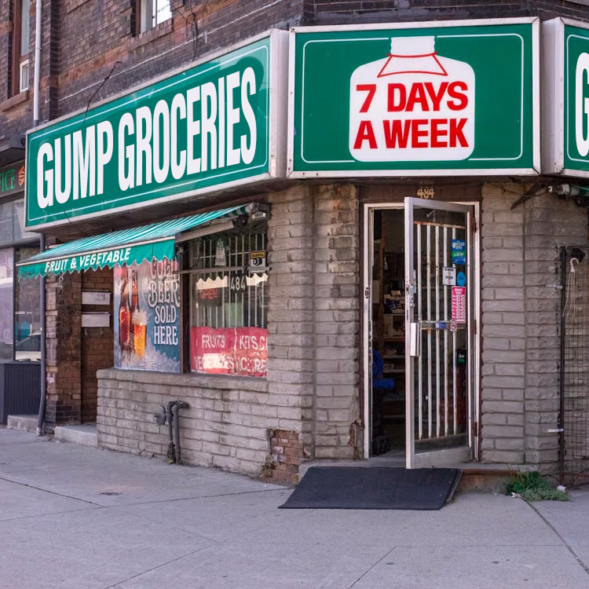
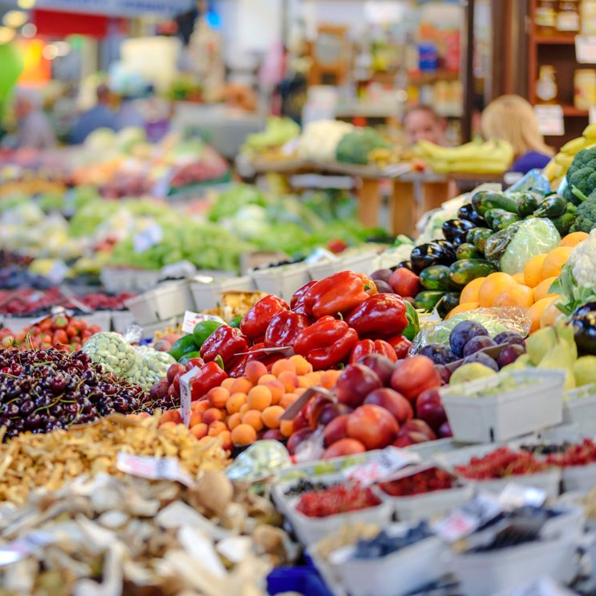
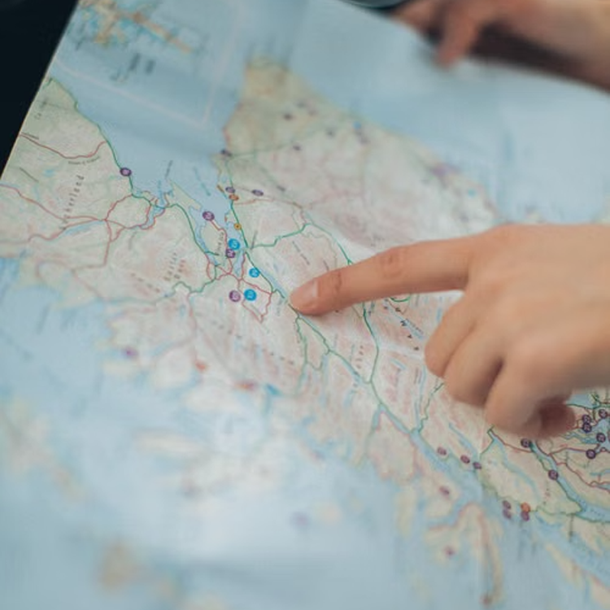
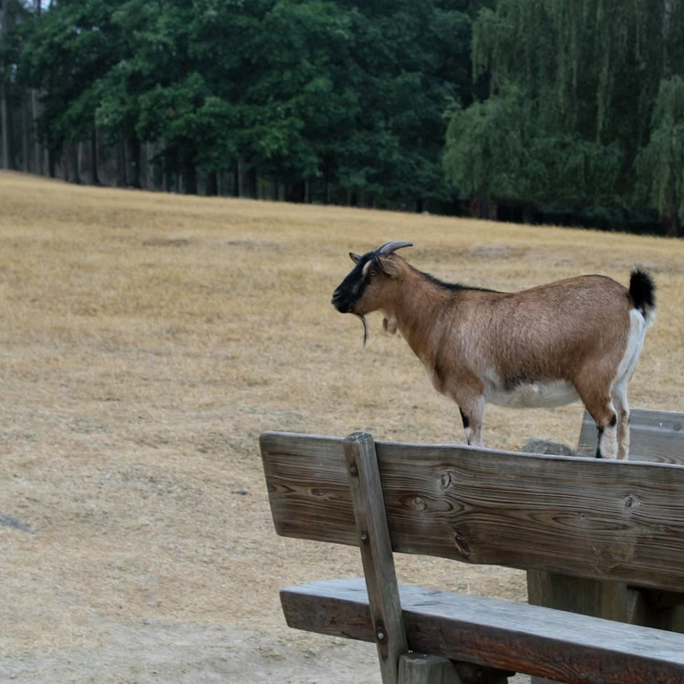

Shop
Contact Us
FAQ
Search Bar (to be finished)


Gump Groceries is an up-and-coming grocery store made to help customers find the food they need. Gump Groceries is dedicated to making sure that the shopping experience of all customers is at a maximum.
Gump Groceries was built on the foundation of helping its community. We promise to always give back to our community whenever possible. This includes frequent sales, fundraisers, and donating to local drives.
Our hope with Gump Groceries is to become a cornerstone in every community we implant ourselves in.
Gump Groceries was founded by lifelong innovator Jack Collier. Born in 1985, he dedicated himself to his community, a stalwart figure that others could rely on.
He founded Gump Groceries in 2007, upon his principles of community and care, for which he was famed.
He is infamous for his large, beautifulicous handlebar moustache, and his perfect jawline.

Gump Groceries prouds itself on only getting its groceries from sustainable, child labour-less sources. A large section of our time and care is put into ensuring that the stores we collect our produce and product from are of the highest quality.
We make sure that our fruits and vegetables are always in season, and only buy from countries currently experiencing the proper weather.
We get our salmon from child labour.

Gump Groceries has stores all across New Zealand. We have stores in Auckland, Wellington, Christchurch, Dunedin, Queenstown, and Kerikeri.
Gump Groceries is always opening new stores, so make sure to check back in if there are none near you!

We are Gump.
Gump Groceries is an up-and-coming, local, honest brand. We live by our principle of care and community, and wish to improve your life as well as the lives of those around you. We care. We are like the parents you never had. You NEED us. Noone else wants you like we do.
Gump Groceries is also always looking for sales. For you. Sales for you. We do it for you, everything you do. When will you repay the favor? When will you give us what we want? We've waited long enough. You need us, don't you? You'll give us what we want, won't you?
Unsure where to find information on select products? Contact us through email at GumpGroceries@gmail.com and we will be more than happy to help you out. If you need information tailored to a specific store, just act the manager on duty and they will help you through your issue.
If you are looking for a job and are unsure of where to apply to, reach out to us on LinkedIn (click here) and submit your CV. You can find job openings as well as other information on there as well. 2 years of work experience in public services is required for any and all jobs here at Gump Groceries.™
If you wish to contact a senior director at Gump Groceries, please do not hesitate to reach out to us on one of our social media handles (Instagram, Youtube, etc.), and we will help to get you in contact with one of our higher ups. If this does not work, contact information for all of our employees is listed on our LinkedIn. Simply search for the person you intend to contact and send them a message.